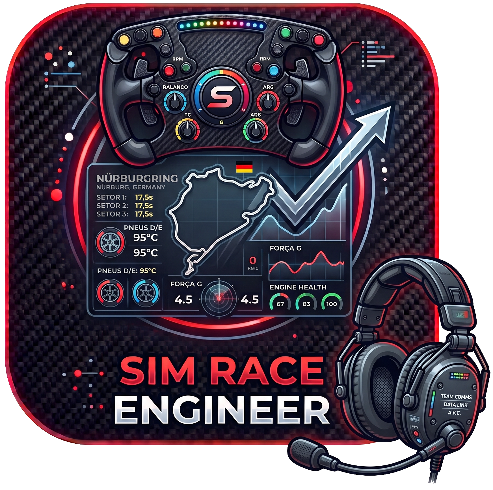
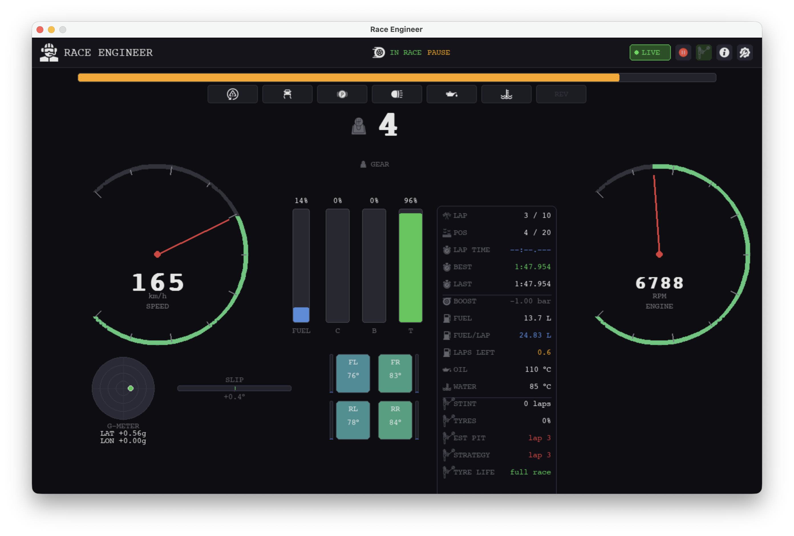
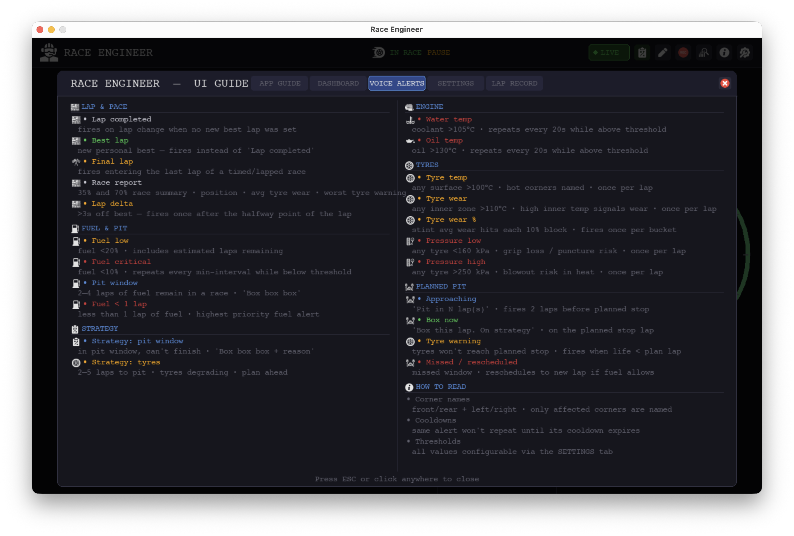
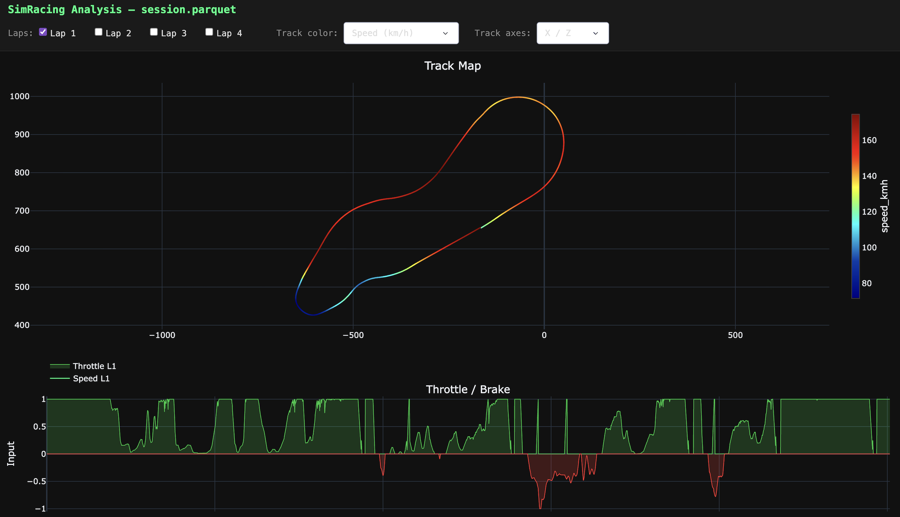
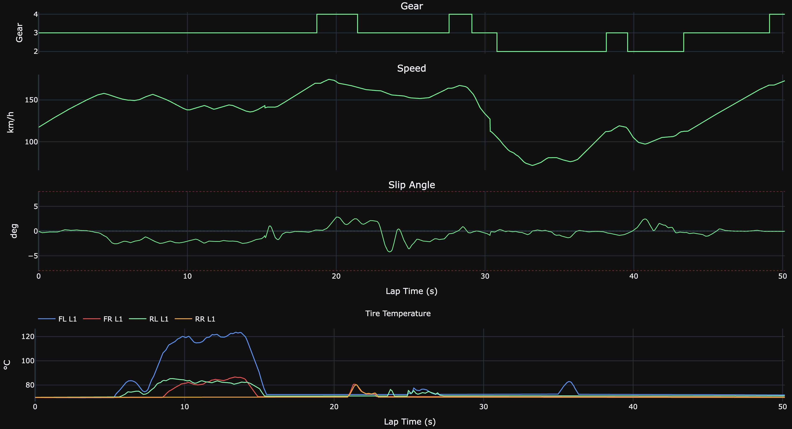

Sim Race Engineer connects to GT7 via UDP and gives you the live data, voice alerts, and race strategy that the game never shows you.

Four tightly integrated modules that work together to turn raw UDP packets into actionable driving feedback, in real time.
Speed, RPM, tyres, G-forces, slip angle, suspension, TCS/ASM — all on one screen.
Offline Piper TTS calls out fuel, tyre health, thermals, and lap pace — no internet needed.
Auto pit-stop calculator updated every lap from live fuel and tyre wear data.
Every lap saved automatically as Apache Parquet at ~60 Hz. No manual action required.
Interactive Plotly Dash viewer with track map, tyre temps, and pedal traces.
Every threshold, alert, and toggle lives in a single .conf file. No recompile needed.
Each widget is designed to be read at a glance — tyre state, weight transfer, electronic interventions, and fuel level are visible the moment you need them.
| Widget | Data |
|---|---|
| Speed & RPM | Current speed (km/h) and revs with colour-coded zones |
| RPM bar | Full-width strip for at-a-glance shift timing |
| Pedal bars | Clutch · Brake · Throttle (0–100%) |
| G-meter | Lateral + longitudinal G-force as circular trace |
| Slip angle | Oversteer/understeer bar — green / orange / red |
| Tyre tiles | Per-corner surface temp with hot/optimal/cold zones |
| Wheel slip | Orange border = wheelspin · Red = lockup |
| Suspension | Per-corner travel bar showing load distribution |
| Status strip | TCS · ASM · REV limiter · Handbrake · OIL! · H₂O! |
Offline Piper TTS. No cloud, no latency. Available in English and Portuguese. Each alert has an independent cooldown so you never get spammed.

All alert types
Three layers of strategy logic so you can go from "just drive" to a fully configured multi-stop plan with live reschedule support.
Recalculates every lap from live fuel rate and tyre wear. Tells you whether you can finish, and when to pit if you can't.
| Laps to fuel out | Fuel ÷ avg fuel/lap |
| Laps to tyre limit | Until wear > threshold (default 80%) |
| Recommended pit lap | Earliest safe stop + 1-lap buffer |
| Pit reason | FUEL TYRES FUEL+TYRES |
Set up to 3 user-defined pit stops. The engineer calls the approach, the box lap, and reschedules automatically if you miss the window.
| Approaching | 2 laps before planned stop |
| Box now | On the planned stop lap |
| Tyre warning | Tyres won't last to planned stop |
| Missed | Auto-reschedules to earliest safe lap |
Proactive briefings with fuel delta, recommended stop count, and evenly distributed optimal pit windows — updated every lap.
| Strategy health | ON_PLAN REVISE CRITICAL |
| Stop windows | Evenly distributed optimal pit laps |
| Check-in | At 33% / 66% of race distance |
| Fuel save+ | When delta is 0–2 L — lift & coast |
After a session, click Analyse in the app header to open a file picker.
Select any lap_NN.parquet file — the interactive viewer opens in your browser automatically.
lap_NN.parquet file from ~/simracing_laps/| Chart | Data |
|---|---|
| Track map | Racing line from XYZ data, coloured by speed or TCS/ASM |
| Tyre temps | Surface temp per corner across the lap, all laps overlaid |
| Timeseries | Throttle · Brake · Gear · Speed · Slip — shared time axis |


Sessions and laps are saved as Apache Parquet (Snappy) the moment you go green. No buttons, no manual action.
Speed · RPM · gear · throttle · brake · clutch · position (XYZ) · velocity · G-forces · slip angle
Tyre surface + inner/mid/outer temps · tyre pressure · suspension travel · water temp · oil temp
Lap time · fuel used · fuel avg · pedal counters — appended at lap change
~/simracing_laps/<YYYY-MM-DDTHHMMSS>/lap_NN.parquet · toggle via REC button
macOS app bundle — no Python, no terminal required.
Grab SimRaceEngineer.app.zip from the
latest release ↗,
unzip, and move to /Applications.
In Gran Turismo 7:
Options → Machine Settings
→ Send Vehicle Data → On
PS5 and Mac must be on the same network.
On first launch the Settings panel opens automatically. Enter your PS5's IP address and click Save. The app remembers it for future sessions.
The dashboard comes alive the moment you enter a car. Voice alerts and lap recording start automatically.
| Setting | Where | Detail |
|---|---|---|
| PS5 IP address | App Settings → General | Find it on PS5: Settings → Network → View Connection Status |
| GT7 telemetry output | GT7 in-game | Options → Machine Settings → Send Vehicle Data → On |
~/simracing/piper/. English and Portuguese supported. No manual step required.
| G-Meter (lateral + longitudinal) |
| Wheel slip per tyre |
| TCS / ASM / REV / Handbrake strip |
| Slip angle / oversteer indicator |
| Suspension travel per corner |
| Fuel rate + laps remaining |
| Voice alerts (Piper TTS) |
| Race strategy engine |
| Lap recording (Parquet) |
| Post-session Dash viewer |
| Game | Protocol |
|---|---|
| Assetto Corsa Competizione | UDP JSON · port 9000 |
| F1 | Codemasters UDP |
| iRacing | SDK shared memory (Windows) |